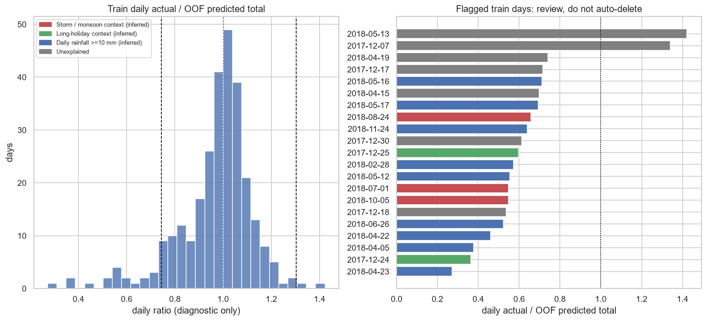
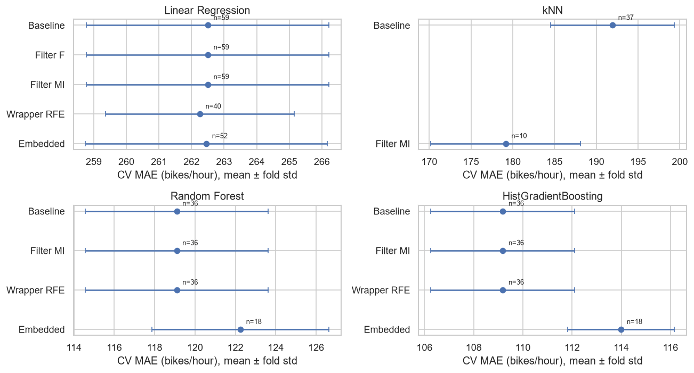

รายงานโครงงานวิชา Machine Learning
การทำนายจำนวนการเช่าจักรยานรายชั่วโมง
Seoul Bike Sharing Demand — Regression
รหัสนิสิต ชื่อ-นามสกุล 6330300160 นาย ชญานิน ตลับเงิน 6730300591 นาย ศุภวิชญ์ ไชยานุศักดิ์ 6730300850 นาย พัฒนเดช มะหิเมือง
ตุลาคม 2569
สารบัญ
ตารางเทียบกับข้อกำหนดของโครงงาน
บทคัดย่อ
1. บทนำและนิยามปัญหา
2. ข้อมูล
3. การแบ่งข้อมูลและการป้องกัน leakage
4. การสำรวจข้อมูล (EDA)
5. Feature engineering และ preprocessing
6. Feature selection
7. PCA
8. Baseline และการเทียบโมเดล
9. Hyperparameter tuning
10. การเลือกโมเดลและทรัพยากรที่ใช้
11. ผลบนชุดทดสอบและ error analysis
12. การทำนายข้อมูลใหม่
13. ความท้าทายที่พบ
14. อภิปรายผล ข้อจำกัด และแนวทางพัฒนาต่อ
15. สรุป
ภาคผนวก ก. เช็คลิสต์ป้องกัน leakage · ข. การรันซ้ำ
เอกสารอ้างอิง
ตารางเทียบกับข้อกำหนดของโครงงาน
ข้อกำหนด สิ่งที่ทำ หัวข้อ 1. เลือก dataset และกำหนดเป้าหมาย Seoul Bike Sharing Demand (UCI) · regression ทำนายยอดเช่าคัน/ชม. 1, 2 1. EDA: สถิติเชิงพรรณนา, visualization, ความสัมพันธ์, outlier สถิติเชิงพรรณนา กราฟ Pearson/IQR และ Magnus/OOF รายวันบน train 4 2. จัดการ missing value info() พบ missing value 9 ค่าในความชื้น → ไม่ลบแถว · เติมด้วย median ใน Pipeline2, 5 2. จัดการ outlier เก็บเหตุการณ์จริง; ค่าที่สงสัยจาก Magnus → NaN; พายุใช้ scope rule จาก KMA เหมือนกันทั้ง train/test 4, 5 2. Encoding One-hot สำหรับฤดู เดือน วัน · ชั่วโมงเลือก encoding ตามชนิดโมเดล 5 2. Feature scaling StandardScaler (Z-score) พร้อมเหตุผลที่ไม่ใช้ Min-Max 5 3. Filter method f_regression (correlation) และ mutual_info_regression · อธิบายว่าทำไมใช้ chi² ไม่ได้6 3. Wrapper method RFE(Ridge) สำหรับ Linear; RFE(RF proxy) สำหรับ RF/HGB 6 3. Embedded method Lasso สำหรับ Linear; RF proxy importance สำหรับ RF/HGB 6 3. Feature extraction PCA 7 4. แบ่ง train/test 70–80 / 20–30 80 / 20 ตามวัน (292 / 73 วัน) + 5-fold GroupKFold บน train 3 4. อัลกอริทึมอย่างน้อย 3–4 แบบ Linear Regression, kNN, Random Forest, HistGradientBoosting + baseline 3 แบบ 8, 9 4. เมตริก MAE, MSE, RMSE, R² ครบทั้ง 4 ค่า ทั้งใน CV ของทุกโมเดล (ตารางที่ 8.1) และบน test (ตารางที่ 11.1) · MAE เป็นเมตริกหลัก 1, 8, 11 4. วิเคราะห์ overfitting / underfitting คอลัมน์ gap = CV MAE − MAE บน train (ตารางที่ 8.1) 8 4. Model selection เลือกด้วย CV MAE + ทรัพยากรที่ใช้ (ไม่ใช้ test) 10 ป้องกัน data leakage split และ CV ตามวัน · ทุกขั้นที่เรียนจากข้อมูลอยู่ใน Pipeline · พิสูจน์ราย fold (ตารางที่ 5.3) 3, 5, ภาคผนวก ก 5. สรุปโมเดลที่ดีที่สุดและประสิทธิภาพ HistGradientBoosting · ผล test และ error analysis 10, 11, 15 5. ทำนายข้อมูลใหม่ Pipeline ที่ใช้งานจริง + 4 สถานการณ์สมมติ พร้อมแปลความหมาย 12 ความท้าทายที่พบ ตารางปัญหาและวิธีแก้ 13 สิ่งที่ส่ง: รายงาน · โค้ด · สไลด์ รายงานนี้ (reports/report.pdf) · notebook 00_setup, 01_eda, 02_modeling พร้อมคำอธิบายทุก cell · สไลด์นำเสนอ 18 หน้า (slides/seoul-bike-presentation.html) และบทพูด (slides/speaker-script.html) ภาคผนวก ข
บทคัดย่อ โครงงานนี้ทำนายยอดเช่าจักรยานรายชั่วโมงของ Seoul Bike ทั้งเมือง จากสภาพอากาศและปฏิทิน โดยใช้ข้อมูล UCI จำนวน 8,760 ชั่วโมง (ธ.ค. 2017 - พ.ย. 2018) ขอบเขตคือ ระบบเปิด และอยู่นอกวันผลกระทบพายุที่ระบุจากประกาศ KMA ล่วงหน้าสำหรับเขตเมืองหลวง แบ่ง train/test ตามวันและเลือกโมเดลด้วย 5-fold GroupKFold บน train ทุกขั้นที่เรียนค่าจากข้อมูลอยู่ใน Pipeline
ตรวจค่าจากเซนเซอร์ด้วย Magnus และใช้ OOF รายวันเป็นเครื่องมือตรวจ train เพิ่ม rain_prev_3h หลังเปรียบเทียบ CV แบบคู่ ทดลอง selector ตามแต่ละโมเดล พร้อม PCA สำหรับ Linear/kNN แล้วส่งตัวเลือก selector เข้า tuning โมเดลที่ชนะคือ HistGradientBoosting กับ MI 36/36 คอลัมน์ ได้ CV MAE 104.86 ± 3.96 คัน/ชม.
หลังตรึงโมเดลจาก CV ประเมิน test ในขอบเขต 1,656 ชั่วโมง ได้ MAE 91.46 , RMSE 149.06 , R² 0.938 เมื่อใส่วันพายุ 41 ชั่วโมงกลับมาโดยไม่ fit ใหม่ MAE รวมเป็น 95.48 จุดอ่อนยังอยู่ที่ฝนและบริบทที่ feature ไม่ครอบคลุม ผลนี้เป็นการประเมินด้วยอากาศที่บันทึกไว้ ยังไม่วัดความผิดพลาดของพยากรณ์อากาศในระบบจริง
104.86 CV MAE ± 3.96
91.46 test MAE ในขอบเขต
95.48 test รวมวันพายุ
73.7% CV MAE ลดจาก baseline เวลา
1. บทนำและนิยามปัญหา ผู้ให้บริการต้องเตรียมจักรยานและคนขนย้ายให้สอดคล้องกับยอดเช่า โครงงานนี้ตั้งโจทย์ regression : 1 แถวคือ 1 ชั่วโมงของทั้งระบบ เป้าหมาย rented_bike_count มีหน่วยคัน/ชั่วโมง ผลช่วยวางแผนระดับเมือง แต่ไม่บอกความต้องการรายสถานี
MAE เป็นเมตริกหลัก เพราะแปลเป็นจำนวนคันที่คลาดเฉลี่ยได้ตรงๆ ข้อมูลยอดเช่าเบ้ขวา จึงรายงาน MSE (คัน²), RMSE (คัน/ชม.) และ R² ประกอบเพื่อเห็น error ขนาดใหญ่และประสิทธิภาพเทียบค่าเฉลี่ย R² ไม่ใช่ accuracy
เมื่อนำไปใช้ล่วงหน้า ต้องมีอากาศที่พยากรณ์สำหรับชั่วโมงนั้น ปฏิทิน สถานะเปิดระบบ ประกาศพายุ และประวัติฝนที่มีให้ใช้ ณ เวลาทำนาย โครงงานนี้ไม่ใช้ lag ของยอดเช่า และไม่ทำนายเหตุการณ์พายุภายในขอบเขตหลัก
2. ข้อมูล Seoul Bike Sharing Demand (UCI id 560, CC BY 4.0) ครบ 365 วัน × 24 ชั่วโมง ไม่มีแถวซ้ำ ชุดที่ใช้ทำ missing humidity 9 ค่าไว้สำหรับฝึกจัดการ missing value ตามที่อาจารย์อนุญาต สร้างด้วย scripts/make_dataset.py และ commit แล้ว
ตารางที่ 2.1 ตัวแปรในชุดข้อมูล (เปลี่ยนชื่อเป็น snake_case)
คอลัมน์ดิบ ชื่อที่ใช้ ชนิด / หน่วย Date dateวันที่ (dd/mm/yyyy) — ใช้เป็น group ของการ split ไม่ใช่ feature Rented Bike Count rented_bike_counttarget · คัน/ชั่วโมงHour hour0–23 Temperature(°C) temp_c°C Humidity(%) humidity_pct% Wind speed (m/s) wind_speed_msm/s Visibility (10m) visibility_10mหน่วย 10 เมตร (27–2,000) Dew point temperature(°C) dew_point_c°C Solar Radiation (MJ/m2) solar_radiation_mjMJ/m² Rainfall(mm) rainfall_mmมม. Snowfall (cm) snowfall_cmซม. Seasons seasonsWinter / Spring / Summer / Autumn Holiday holidayHoliday / No Holiday Functioning Day functioning_dayYes / No (ระบบเปิด/ปิด)
ตารางที่ 2.2 ตรวจไฟล์ก่อนโหลดจริง (01_eda ขั้น 2.1)
ตรวจ ผล อ่านหัวตารางด้วย utf-8 UnicodeDecodeError ที่ byte \xb0 (สัญลักษณ์ °) อ่านด้วย cp1252 Temperature(°C) ถูกต้อง → ใช้ค่านี้ (บันทึกใน config.py)อ่านด้วย latin-1 Temperature(°C) ถูกต้องเช่นกันวันที่ ส่วนที่ 1 / 2 / 3 1–31 / 1–12 / 2017–2018 → วัน/เดือน/ปี (01/12/2017 = 1 ธ.ค. 2017)
ใช้ cp1252 และระบุ %d/%m/%Y ใน config.py ไม่ให้ pandas เดาวันที่เอง info() พบ humidity_pct 8,751 non-null จาก 8,760 (ขาด 9 ค่า) date ใช้เป็น group และสร้างปฏิทิน ไม่ใส่วันที่ดิบเป็น feature
3. การแบ่งข้อมูลและการป้องกัน leakage ใช้ GroupShuffleSplit(test_size=0.2, random_state=42) โดย group เป็นวัน ชั่วโมง 0–23 ของวันเดียวกันอยู่ฝั่งเดียวเสมอ ถ้าสุ่มทีละชั่วโมง วันเดียวกันจะอยู่ทั้ง train และ test ทำให้การประเมินง่ายเกินงานทำนายวันใหม่
ตารางที่ 3.1 ผลการแบ่งด้วย GroupShuffleSplit (test_size = 0.2 ของจำนวนวัน, random_state = 42)
วัน แถว ชั่วโมงที่ระบบปิด วันหยุดนักขัตฤกษ์ สัดส่วนฤดูหนาว train 292 7,008 240 12 22.9% test 73 1,752 55 6 31.5%
ตัวเลขตาราง 3.1 เป็น split เดิมก่อนใช้ scope rule บันทึกใน data/splits/train_dates.csv และ test_dates.csv แล้ว ทุก notebook อ่านรายการเดิม ไม่เปลี่ยนวันและไม่สุ่มใหม่หลังเห็นผล จำนวนแถว/วันหลังกรองดูตาราง 5.4
เหตุผลของการเลือกวิธี ข้อมูลมีเพียงหนึ่งปี หากตัดช่วงท้ายเป็น test จะมีบางฤดูเท่านั้น จึงสุ่มตามวันเพื่อวัดความสัมพันธ์อากาศ/เวลา → ยอดเช่าในปีเดียวกัน ผลนี้ยังไม่ใช่หลักฐานการพยากรณ์ข้ามปีหรือรับมือ distribution shift ในอนาคต
การตรวจ split train/test ไม่มีวันซ้ำ ทุกวันมี 24 ชั่วโมงก่อนกรอง และรวมได้ 8,760 แถวเดิม ตรวจโครงสร้าง test เช่น ฤดู/วันหยุดเพื่ออธิบาย split โดยไม่ใช้ยอดเช่าเลือกวันใหม่ EDA และการเลือก threshold/features/โมเดลใช้ train เท่านั้น; test ใช้ประเมินและวิเคราะห์ในขั้น 13 หลังตรึงโมเดล CV ใช้ GroupKFold(5) พร้อม groups=date ทุกครั้ง; imputer/scaler/encoder/selector/PCA fit ภายใน training fold Scope วันพายุกำหนดจากประกาศภายนอกล่วงหน้า ใช้กฎเดียวกันทั้งสองฝั่ง และรายงานคะแนนรวมวันพายุกลับมาให้เห็นผลของขอบเขต ไม่เลือกวันจาก residual
4. การสำรวจข้อมูล (EDA) 4.1 ยอดเช่า ชั่วโมง และประเภทวัน EDA เริ่มจาก train เดิม 7,008 แถว; เมื่อตรวจระบบเปิดเหลือ 6,768 แถว (282 วัน) ตัวเลขส่วนนี้ยังรวมวันพายุ จึงไม่ใช่สถิติของ train ในขอบเขตสุดท้าย 6,672 แถว
ตารางที่ 4.1 สถิติเชิงพรรณนาของตัวแปรตัวเลข (train 7,008 แถว ก่อนตัดชั่วโมงที่ระบบปิด)
ตัวแปร mean std min Q1 median Q3 max rented_bike_count730.86 653.78 0 206 547 1,101 3,556 temp_c13.46 11.72 −16.2 4.10 14.80 22.80 39.4 humidity_pct58.64 20.25 0 43 58 75.00 98 wind_speed_ms1.70 1.02 0 0.90 1.50 2.30 7.4 visibility_10m1,430.96 601.10 27 943.75 1,662 1,998 2,000 dew_point_c4.71 12.85 −30.6 −4.20 5.95 15.40 27.2 solar_radiation_mj0.58 0.88 0 0 0.01 0.95 3.52 rainfall_mm0.15 1.16 0 0 0 0 35.0 snowfall_cm0.07 0.45 0 0 0 0 8.8
รูปที่ 4.1 การกระจายยอดเช่าบน train เฉพาะระบบเปิด ระบบปิด 240 ชั่วโมงมียอด 0 ทุกแถว → แยกออกจากงานทำนายระบบเปิด เมื่อเปิดระบบ mean 756.8 มากกว่า median 582.5 (เบ้ขวา) วันทำงานมีพีค 08:00 ประมาณ 1,381 และ 18:00 ประมาณ 1,810 คัน/ชม. วันหยุดรูปร่างต่างกัน → เก็บ hour, ปฏิทินและ day type
4. การสำรวจข้อมูล (ต่อ) 4.2 วันในสัปดาห์ ฤดู อุณหภูมิ และฝน รูปที่ 4.2 ยอดเฉลี่ยรายชั่วโมงแยกประเภทวัน (train ระบบเปิด) รูปที่ 4.3 ฤดูและอุณหภูมิ (train ระบบเปิด) รูปที่ 4.4 ค่าเฉลี่ยตามปริมาณฝน (train ระบบเปิด) ฤดูหนาวเฉลี่ยประมาณ 230 ส่วนฤดูร้อน 1,037 คัน/ชม. อุณหภูมิมีความสัมพันธ์แบบโค้งคว่ำ ยอดสูงในช่วงอุ่นก่อนลดในช่วงร้อนจัด ฝนสัมพันธ์กับยอดต่ำ: ไม่มีฝนเฉลี่ย 795 เทียบมีฝนประมาณ 164 คัน/ชม.
การตัดสินใจ: เก็บอากาศทั้ง 8 ตัว ฤดู เดือน วันในสัปดาห์ วันหยุด และ is_raining ไม่ตัดฝน/หิมะจริง แม้โดน IQR flag ความสัมพันธ์ใน EDA ไม่พิสูจน์ผลเชิงเหตุและผล
4. การสำรวจข้อมูล (ต่อ) 4.3 Correlation และ IQR รูปที่ 4.5 Pearson correlation บน train ระบบเปิด
ตารางที่ 4.2 outlier ตามกฎ IQR (ต่ำกว่า Q1 − 1.5·IQR หรือสูงกว่า Q3 + 1.5·IQR) · train เฉพาะชั่วโมงที่ระบบเปิด · ตัวแปรอื่นไม่มีค่าเกินขอบ
ตัวแปร ขอบล่าง ขอบบน max outlier (แถว) % solar_radiation_mj−1.42 2.38 3.52 486 7.18 rainfall_mm0.00 0.00 35.00 413 6.10 snowfall_cm0.00 0.00 8.80 296 4.37 wind_speed_ms−1.20 4.40 7.40 110 1.63 rented_bike_count−1,116 2,460 3,556 95 1.40
คู่ temp_c - dew_point_c มี r=0.911 (คู่เดียวที่ |r|>0.8) Pearson วัดเฉพาะความสัมพันธ์เส้นตรง จึงอ่านร่วมกับกราฟอุณหภูมิ ในขั้นถัดไปทดสอบ FS/PCA แทนการตัดคอลัมน์นี้ด้วยมือ
ฝนและหิมะส่วนมากเป็น 0 ทำให้ IQR=0 ทุกแถวที่มีฝน/หิมะจึงถูก flag กฎนี้ไม่พอสำหรับตัดข้อมูล ค่าสูงของลม แสง และยอดเช่ายังเป็นเหตุการณ์ที่เกิดได้จริง จึงเก็บไว้ในขอบเขตที่กำหนด
4.4 ตรวจความชื้น 0% 8 แถวมี RH=0% ทั้งที่สูตร Magnus จากอุณหภูมิและ dew point ประมาณ 34.0–71.7% จึงสงสัยค่าเซนเซอร์ (อนุมาน) แปลงเฉพาะ humidity เป็น NaN แล้วให้ median imputer ใน Pipeline เติม ร่วมกับ missing เดิม 9 เป็น NaN 17 ค่า
4. การสำรวจข้อมูล (ต่อ) 4.5 Magnus และ outlier ระดับวัน (01_eda 4.11) ตรวจ RH ≈ 100 exp(17.625 Td/(243.04+Td) - 17.625 T/(243.04+T)) กำหนดช่องว่าง >15 จุดเปอร์เซ็นต์ไว้เป็นเกณฑ์ตรวจ ไม่ใช่ความแม่นยำตามสเปกเซนเซอร์ และไม่ปรับเพื่อทำให้ MAE ดีขึ้น
ตารางที่ 4.3 ค่าขัดแย้งจาก Magnus บน train (ค่าประมาณปัดจำนวนเต็ม) วันที่ ชม. T °C Td °C RH % Magnus % 2018-05-27 9 19.5 0.0 43 27 2018-05-29 0 20.6 0.0 54 25 2018-05-29 1 20.3 0.0 55 26 2018-05-29 2 20.2 0.0 56 26 2018-05-31 19 25.2 0.0 53 19 2018-11-29 18 0.0 -4.8 46 70
พบ dew point=0 ห้าแถว และ temperature=0 หนึ่งแถวที่ไม่สอดคล้องกับตัวอื่น จึงสงสัยคอลัมน์ที่เป็น 0 (อนุมาน) กฎแก้ในขั้น 5 ต้องมีช่องว่าง >15 และมี T/Td เป็น 0 เพียงตัวเดียว ไม่ลบแถว ไม่แปลงทุกค่า 0°C และไม่แก้เมื่อทั้งคู่เป็น 0
การตรวจ OOF รายวัน ใช้ HGB default กับ feature ดิบ 12 ตัวและ GroupKFold(5) บน train ระบบเปิด 6,768 ชั่วโมง/282 วัน รวม actual/pred รายวันแล้วตรวจ IQR ของ log(actual/pred) ได้ 21 วัน: พายุ/มรสุม 3, ฝน 9, วันหยุด 2, อธิบายไม่ได้ 7 วัน นี่เป็น เครื่องมือตรวจ EDA ไม่ใช่ Pipeline สุดท้ายและไม่ใช่กฎลบวัน

รูปที่ 4.6 Daily OOF ratio diagnostics (train only) วันฝนหนัก วันหยุด และวันอธิบายไม่ได้ยังเก็บไว้ วันที่ 1 ก.ค. อยู่กลุ่มมรสุมและยังเก็บไว้ เพราะประกาศล่วงหน้าแยกฝนมรสุม 30 มิ.ย.–1 ก.ค. จากอิทธิพลพายุ 2 ก.ค. ตรวจแสงกลางคืน 22:00–04:00: ไม่มีค่าบวก; visibility=2000 พบ 25.4% เป็นเพดานการบันทึก ไม่ตัดเป็น outlier
5. Feature engineering และ preprocessing 5.1 กฎขอบเขตและการซ่อมค่าที่สงสัย ระบบเปิด และอยู่นอกวันผลกระทบพายุที่ระบุจากประกาศ KMA ล่วงหน้าสำหรับเขตเมืองหลวง รายการวันที่ระบุไว้ใน config.STORM_EVENTS/STORM_DATES: Prapiroon: 2 ก.ค.; Soulik: 23–24 ส.ค.; Kong-rey: 5–7 ต.ค. 2018 อิงประกาศ KMA ก่อนเหตุการณ์ที่พยากรณ์ฝน/ลมบนบกในเขตเมืองหลวง ไม่ได้หมายความว่าทุกวันเป็นวันประกาศเตือนไต้ฝุ่นอย่างเป็นทางการในโซลหรือวันขึ้นฝั่ง
ตารางที่ 5.4 จำนวนก่อน/หลังใช้กฎเดียวกันทั้ง train/test ชุด แถวเดิม วันเดิม ระบบเปิด ตัดพายุเพิ่ม แถวในขอบเขต วันในขอบเขต train 7,008 292 6,768 96 6,672 278 test 1,752 73 1,697 41 1,656 69
train ตัดพายุเพิ่ม 96 ชั่วโมง (4 วัน), test 41 ชั่วโมง (2 วัน) วันที่ 6 ต.ค. ปิด 00:00–06:00 อยู่แล้ว จึงไม่ตัดซ้ำ 7 ชั่วโมงนั้น ไม่มีการเปลี่ยนไฟล์ split วันที่ 7 ต.ค. อยู่ใน rule จากช่วงคาดการณ์ลมบนบกในประกาศ 4 ต.ค.
humidity=0 → NaN; Magnus ขัดแย้งร่วมกับ T หรือ Td เป็น 0 เพียงตัวเดียว → เฉพาะคอลัมน์นั้นเป็น NaN train มี humidity NaN 17, dew point 5, temperature 1 แถว ให้ imputer เติมจาก training fold
5.2 Feature ที่สร้างเพิ่ม ตารางที่ 5.1 Feature engineering (ไม่ใช้ target) feature คำนวณจาก เหตุผล hour_sin, hour_cos sin/cos(2π hour/24) ชั่วโมงเป็นวงรอบ is_weekend, day_of_week date รูปแบบวันทำงาน/วันหยุด is_holiday holiday ข้อความ → 0/1 month date ละเอียดกว่าฤดู is_raining rainfall_mm > 0 แยกมี/ไม่มีฝน rain_prev_3h 3 ชั่วโมงก่อนหน้าในวันเดียวกัน ข้อมูลฝนก่อนชั่วโมงปัจจุบัน
rain_prev_3h = ผลรวมฝนที่ชั่วโมง h-1, h-2, h-3 ภายในวันเดียวกัน; ไม่รวมฝนชั่วโมงปัจจุบัน ไม่ข้ามเที่ยงคืน เวลา 00:00=0; 01:00/02:00 ใช้ชั่วโมงก่อนหน้าที่มีในวันนั้น ชั่วโมงภายในวันที่หายหรือฝนขาด → NaN ไม่แทนว่าฝน 0 แถวไม่เรียงก็ lookup ด้วย (date,hour) ได้ ห้าม key ซ้ำ หากมีประวัติฝนที่ให้มาแล้วต้องเก็บไว้
5. Preprocessing และหลักฐานการป้องกัน leakage 5.3 Pipeline และ encoding X ก่อน preprocess มี 18 คอลัมน์ (hour, อากาศ 8, ฤดู, feature ที่เพิ่ม 8 ตัว) y เป็นยอดเช่าดิบ date ใช้เป็น group ระบบเปิดใช้กรอง ไม่ใส่ functioning_day ใน X
ตารางที่ 5.2 Encoding ชั่วโมงตามชนิดโมเดล โมเดล hour หลัง preprocess เหตุผล Linear one-hot 24 59 แต่ละชั่วโมงมี coefficient ของตนเอง kNN sin/cos 37 23:00 ใกล้ 00:00 ในระยะทาง RF / HGB 0–23 36 split เป็นช่วงชั่วโมงได้เอง
numeric: median imputer + StandardScaler; categorical: OneHotEncoder(handle_unknown="ignore") เดือน/วัน/ฤดูเข้า one-hot ทุกโมเดล scaler ใช้กับ numeric ให้ Linear/kNN อยู่ในสเกลเทียบกันและทำให้ PCA เหมาะสม StandardScaler จัดศูนย์และสเกลความแปรปรวน ส่วน Min-Max ผูกสเกลกับค่าต่ำสุด/สูงสุด ต้นไม้ไม่ต้องอาศัย scale แต่ใช้ factory ร่วมกันเพื่อเทียบได้สม่ำเสมอ
Pipeline = pre → select → model selector/PCA ต้องอยู่หลัง preprocess และ fit ใหม่ใน training fold เช่นเดียวกับ imputer/scaler/encoder ไม่ใช้ selector ที่ fit กับทั้ง train แล้วก่อน CV TransformedTargetRegressor ครอบ Pipeline สำหรับ log1p/expm1
รูปที่ 5.1 ชั่วโมงบนวงกลม (ระยะ 23:00–00:00 = 00:00–01:00 ≈ 0.261) ตารางที่ 5.3 หลักฐานที่เรียนค่าจาก training fold ของ GroupKFold fold วัน train วัน val วันซ้ำ mean T median RH mean y val 0 222 56 0 13.345 57.0 741.240 1 222 56 0 13.265 57.0 814.811 2 222 56 0 13.288 57.0 741.305 3 223 55 0 13.208 58.0 766.535 4 223 55 0 13.295 57.0 737.402
KFold ธรรมดา fold 0 มีวันซ้ำ train–val 277/277 วัน แต่ GroupKFold ได้ 0 ทุก fold mean temperature 13.208–13.345 เปลี่ยนตาม training fold ยืนยันว่ามีการ fit ใหม่แต่ละรอบ ทุก search/cross-validation ส่ง groups_train เสมอ
5. Feature ฝน: ทดสอบก่อนนำไปใช้ 5.4 CV แบบคู่บน train เทียบ HGB default ด้วย folds และ preprocessing เดียวกัน เปลี่ยนเฉพาะมี/ไม่มี rain_prev_3h ข้อมูลที่ทำให้ feature นี้เป็น NaN ให้ Pipeline เติมเหมือน numeric อื่น เก็บ feature เฉพาะเมื่อ CV สนับสนุน
ตารางที่ 5.5 Paired GroupKFold: ฝนก่อนหน้า 3 ชั่วโมง เงื่อนไข CV MAE std Without rain history 112.15 4.23 With rain_prev_3h 109.18 2.93
MAE ดีขึ้น 2.97 คัน/ชม. และดีขึ้นครบ 5 folds จึงเก็บ rain_prev_3h train มีค่าบวก 599 แถวและไม่มีประวัติฝนขาด ข้อมูลช่วงต้นวันใช้ศูนย์ก่อนเที่ยงคืนตาม contract ไม่ใช้ข้อมูลวันอื่น
6. Feature selection แยกตามโมเดล 6.1 หลักการและวิธีที่เหมาะกับโมเดล Filter: SelectKBest ให้คะแนนราย feature ใช้ F และ MI สำหรับ Linear; MI สำหรับ kNN/RF/HGB F จับความสัมพันธ์เส้นตรง ส่วน MI จับความสัมพันธ์ที่ไม่เป็นเส้นตรง chi² ใช้กับ target regression นี้ไม่ได้
Wrapper: RFE ลด feature โดย fit ตัวจัดอันดับซ้ำ Linear ใช้ Ridge(alpha=1, step=2); RF/HGB ใช้ RF proxy (40 trees, max_depth=10, min_leaf=2, step=8) HGB ไม่มี feature_importances_ ให้ RFE ใช้โดยตรง
Embedded: SelectFromModel(Lasso) สำหรับ Linear และ SelectFromModel(RF proxy) สำหรับ RF/HGB kNN ไม่มี coefficient/importance จึงทดลอง MI เทียบ baseline ไม่ฝืนใช้ embedded ของ kNN
ตารางที่ 6.1 CV MAE ± std ของวิธีที่ทดสอบ (ดีที่สุดใน grid; - = ไม่ได้ทดลอง) โมเดล ทุกคอลัมน์ F MI RFE Embedded Linear 262.5 ± 3.7 262.5 ± 3.7 262.5 ± 3.7 262.3 ± 2.9 262.5 ± 3.7 kNN 191.9 ± 7.4 - 179.1 ± 9.0 - - RF 119.1 ± 4.5 - 119.1 ± 4.5 119.1 ± 4.5 122.2 ± 4.4 HGB 109.2 ± 2.9 - 109.2 ± 2.9 109.2 ± 2.9 114.0 ± 2.2
ทุกช่องใช้ GroupKFold ชุดเดียวกัน เรียน selector ใน Pipeline ของ training fold คะแนนนี้เลือก configuration บน train ไม่ใช่ผล test และไม่ใช่ nested CV ที่แยกประเมินความเอนเอียงจากการเลือก configuration
6. Feature selection (ต่อ) 6.2 ผลและตัวเลือกที่ส่งเข้า tuning ตารางที่ 6.2 ผลดีที่สุดของแต่ละโมเดลเทียบ baseline โมเดล วิธีที่ชนะ default เก็บ / ทั้งหมด CV MAE ± std ลด MAE Linear RFE (Ridge) 40 / 59 262.26 ± 2.90 0.24 kNN MI k=10 10 / 37 179.15 ± 8.96 12.79 RF ทุกคอลัมน์ 36 / 36 119.10 ± 4.52 0.00 HGB ทุกคอลัมน์ 36 / 36 109.18 ± 2.93 0.00
Linear RFE ลดเพียง 0.24 คัน (เล็กเมื่อเทียบ std; ไม่ใช่หลักฐานความแตกต่างทางสถิติ) kNN MI10 ลด 12.79 คันจาก 191.94 ส่วน RF/HGB เลือกทุกคอลัมน์; MI/RFE ที่เก็บ 36 เท่ากับ baseline การเลือก feature ไม่ได้ช่วยต้นไม้ใน grid ที่ทดลอง

รูปที่ 6.1 การเทียบ selector ของทุกโมเดล; จุด = MAE, error bar = fold std ส่ง passthrough และ clone ของ selector candidate ที่เหมาะกับแต่ละโมเดลเข้า tuning: Linear RFE40, kNN MI10, RF/HGB MI36 selector configuration ไม่มีค่าที่เรียนจากการ fit ติดมาด้วย เมื่อ HGB ที่ tune ชนะด้วย MI36 ต้องรายงานว่า ยังเก็บทุกคอลัมน์
6.3 รายละเอียด Linear และขอบเขตการค้นหา ตารางที่ 6.3 Embedded Lasso (เลือก alpha=0.3, 52 features) alpha 0.1 0.3 1 3 10 30 feature 53 52 50 38 27 9 CV MAE 262.5 262.5 262.8 263.4 271.8 341.4
Filter/RFE ของ Linear ค้น 5,10,15,20,30,40,59 ตัว; RFE MAE ตามลำดับ 485.1,309.8,291.4,282.8,264.7,262.3,262.5 RF/HGB MI และ RFE ค้น 12,24,36; kNN MI ค้น 10,20,30,37 Embedded RF proxy ใช้ threshold 0.5*mean, mean, median
temp_c ได้อันดับ 1 ทั้ง F และ MI (F≈3,045; MI≈0.389); rain_prev_3h อยู่อันดับ MI 6 การจัดอันดับเป็นผลของ representation และชุด train นี้ ไม่ใช่เหตุผลให้ตัด feature ด้วยมือหรือข้อสรุปเชิงสาเหตุ
7. PCA (feature extraction) PCA สร้างแกนใหม่จากผลรวมเชิงเส้น ไม่เลือกคอลัมน์เดิม และไม่ดู y ก่อน fit ต้อง impute/scale numeric ใช้ hour cyclic ทำให้มี 37 คอลัมน์หลัง preprocess ทั้ง Linear และ kNN ใส่ PCA ใน Pipeline เพื่อเรียนแกนจาก training fold เท่านั้น
รูปที่ 7.1 Explained variance และ variance สะสม (train) ตารางที่ 7.1 Loading จาก PCA บน train (เครื่องหมายแกนกลับได้) PC variance loading ที่ |ค่า| สูงสุด PC1 18.1% humidity_pct +0.51; dew_point_c +0.36; is_raining +0.34; visibility_10m -0.32; rain_prev_3h +0.27 PC2 14.9% temp_c +0.55; solar_radiation_mj +0.45; dew_point_c +0.43; hour_cos -0.31; hour_sin -0.22 PC3 10.4% rainfall_mm +0.46; is_raining +0.41; rain_prev_3h +0.41; hour_cos -0.30; wind_speed_ms +0.30
ตารางที่ 7.2 CV MAE ของ PCA (hour cyclic) โมเดล ไม่มี PCA 5 PC 10 PC 15 PC 20 PC 25 PC Linear 311.3 358.7 338.3 324.6 327.1 313.8 kNN (k=10) 191.9 199.3 190.6 184.1 206.0 193.6
14 PC ได้ variance สะสม ≥90%; 19 PC ≥95% variance สูงไม่รับประกันว่าทำนาย y ดี kNN PCA15 ลด MAE จาก 191.9 เป็น 184.1 แต่ MI10 ได้ 179.1 ในการทดลอง default Linear cyclic ไม่ใส่ PCA ได้ 311.3 และแย่ลงทุกจำนวน PC ที่ทดลอง ตัวเลขนี้ไม่ใช่ Linear one-hot 262.5
การตัดสินใจ: นำ PCA15 เข้าตัวเลือก tuning ของ kNN ร่วมกับ passthrough และ MI10 ผลสุดท้าย kNN ใช้ MI10 ไม่ใช้ PCA การตีความกลุ่ม loading เป็นการอนุมาน ไม่ใช่ตัวแปรสาเหตุ
8. Baseline และการเทียบโมเดล ทุกโมเดลใช้ GroupKFold(5) ชุดเดียวกันและ MAE หลัก ค่า default ใช้ทุก feature เพื่อเป็นจุดอ้างอิง: Linear hour one-hot; kNN k=10 hour cyclic; RF 200 trees และ HGB hour raw Baseline เวลาเรียนค่าเฉลี่ยของ hour × (วันทำงาน/วันหยุด) 48 กลุ่มจาก training fold เท่านั้น
ตารางที่ 8.1 Baseline และค่า default (CV ค่าเฉลี่ย 5 folds; MSE หน่วยคัน²) โมเดล MAE std MSE RMSE R² train MAE gap Dummy (mean) 527.6 11.8 423,684 650.7 -0.003 527.3 - Dummy (median) 512.6 14.1 453,973 673.4 -0.074 512.2 - เวลาอย่างเดียว 398.4 10.9 267,639 517.2 0.365 394.0 - Linear Regression 262.5 3.7 117,602 342.9 0.721 257.3 5.2 kNN 191.9 7.4 81,643 285.5 0.806 151.9 40.1 Random Forest 119.1 4.5 38,279 195.2 0.909 36.6 82.5 HistGradientBoosting 109.2 2.9 32,321 179.6 0.923 66.8 42.4
รูปที่ 8.1 CV MAE ± std ของโมเดล default HGB default ได้ 109.18 ดีที่สุด และทุกโมเดลชนะ baseline เวลา 398.4 แสดงว่าชุด feature ที่เพิ่มให้ข้อมูลสำหรับการทำนายใน split นี้ ไม่แยกพิสูจน์ผลของ feature แต่ละตัว Dummy median ได้ MAE ต่ำกว่า mean แต่ RMSE สูงกว่า เพราะใช้ loss คนละแบบ
gap = CV MAE − train MAE RF gap 82.5 ใหญ่ที่สุด บ่งชี้การ fit train มากเมื่อเทียบวันใหม่ ส่วน Linear gap 5.2 แต่ทั้ง train และ CV error สูง สอดคล้องกับข้อจำกัดความยืดหยุ่นของ Linear (อนุมาน) gap อย่างเดียวไม่พิสูจน์ overfit/underfit MSE และ RMSE ในตารางเป็นค่าเฉลี่ยราย fold จึงไม่เท่ากับ RMSE² พอดี
9. Hyperparameter tuning ค้นบน train ด้วย GroupKFold และ groups เดิม objective เป็น MAE ประเมิน passthrough และ selector candidate ภายใน Pipeline พร้อม log1p(y) ที่ fit ใหม่ในแต่ละ fold ไม่ย้อนเลือก configuration จากผล test
ตารางที่ 9.1 ก่อน/หลัง tuning และ configuration ที่ได้ โมเดล default MAE tuned MAE ± std configuration Linear Regression 262.5 262.3 ± 2.9 RFE 40/59; Ridge จัดอันดับ Linear Regression + log1p(y) - 205.9 ± 10.0 passthrough 59; TransformedTargetRegressor kNN 191.9 177.1 ± 8.8 MI 10/37; k=10, distance kNN + log1p(y) - 176.8 ± 10.4 MI 10/37; k=15, distance Random Forest 119.1 117.8 ± 4.1 300 trees, depth=20, leaf=1, max_features=0.75; ทุก 36 คอลัมน์ HistGradientBoosting 109.2 104.9 ± 4.0 MI 36/36; lr=0.1, iter=200, leaves=63, min_leaf=5, l2=1.0 HistGradientBoosting + log1p(y) - 107.3 ± 7.2 พารามิเตอร์และ selector เดียวกับ HGB; fit ใหม่ใน CV
จำนวนที่ประเมินจริง Linear raw/log: 2+2 configurations; kNN raw 42 (7 k × 2 weights × 3 selectors: passthrough/MI10/PCA15), log 20 (5 k × 2 weights × 2 selectors: passthrough/MI10) RF สุ่ม 15 จาก 128, HGB สุ่ม 30 จาก 960 โดย random_state=42 HGB log ประเมิน 1 configuration ที่ clone พารามิเตอร์และ selector จาก HGB แล้ว refit ใหม่ใน CV
RF grid: n_estimators 200/300, max_depth None/20, min_samples_leaf 1/2/5/10, max_features 0.33/0.5/0.75/1.0 และ selector 2 แบบ HGB grid: learning_rate 0.02/0.03/0.05/0.1/0.2, max_iter 200/400/800, leaves 15/31/63/127, min_leaf 5/10/20/40, l2 0/1 และ selector 2 แบบ
log1p/expm1 ช่วย Linear (205.86 เทียบ raw 262.26) และ kNN (176.83 เทียบ raw 177.10; ต่างเล็กเมื่อเทียบ fold std) HGB raw 104.86 ชนะ log 107.31 จึงเลือกรุ่น raw
การเพิ่ม selector ทำให้ search space เปลี่ยน แม้เก็บงบสุ่มเดิมไว้ ผล tuned ที่ดีขึ้นจึงไม่ใช่การทดลองแบบคู่เพื่อพิสูจน์ว่า FS เพียงอย่างเดียวทำให้ RF/HGB ดีขึ้น และ fold std ไม่ใช่ confidence interval ของส่วนต่างระหว่างโมเดล
10. การเลือกโมเดลและทรัพยากรที่ใช้ เลือก variant ที่ CV MAE ต่ำสุดในแต่ละตระกูล แล้ววัด fit บน train ทั้งชุดและเวลาทำนาย 1 แถวของ Pipeline ที่ fit แล้ว เลือกโมเดลก่อนเปิด test ผลในตารางรวม preprocessing และ selector
ตารางที่ 10.1 ความแม่นและทรัพยากรของ finalists (รอบ Run All สุดท้าย) โมเดล selector (n) CV MAE ± std fit (s) ms/แถว HGB SelectKBest (36) 104.9 ± 4.0 1.786 5.63 RF passthrough (36) 117.8 ± 4.1 5.924 15.12 kNN + log1p(y) SelectKBest (10) 176.8 ± 10.4 1.102 3.32 Linear + log1p(y) passthrough (59) 205.9 ± 10.0 0.026 3.53
โมเดลที่เลือก HistGradientBoostingRegressor : learning_rate=0.1, max_iter=200, max_leaf_nodes=63, min_samples_leaf=5, l2_regularization=1.0, random_state=42; hour raw; SelectKBest(mutual_info_regression, k=36) เก็บ 36 จาก 36 คอลัมน์ CV MAE 104.86 ±3.96 ต่ำกว่า RF 117.77
Linear log ไม่ใช้ selector (59 คอลัมน์), kNN log ใช้ MI10 จาก 37 (k=15, distance), RF เก็บทั้ง 36 ทุก finalist clone configuration แล้ว fit บน train 6,672 ชั่วโมง/278 วัน โมเดลชนะถูกกำหนดจาก CV MAE ไม่ใช้เวลา fit หรือ test เพื่อเปลี่ยนผู้ชนะ
การอ่านต้นทุน เวลาขึ้นกับเครื่อง จำนวน thread และสภาพขณะรัน ไม่ใช่ benchmark ของระบบ production HGB รอบนี้ fit 1.786 s, predict 5.63 ms/แถว RF fit 5.924 s, predict 15.12 ms/แถว kNN ใช้ข้อมูล train สำหรับหาระยะทาง จึงมีต้นทุนทำนายและหน่วยความจำที่โตตามขนาด train Linear ทำนายด้วยผลรวม coefficient ต่อคอลัมน์
ผลสนับสนุนว่า Pipeline สามารถทดลองทำนาย 1 แถวได้ในเวลาระดับมิลลิวินาทีบนเครื่องนี้ ยังต้องทดสอบปริมาณงานจริง การรับข้อมูลอากาศ และความพร้อมของประวัติฝนก่อนใช้งาน ไม่มีการสร้างหรือ commit ไฟล์โมเดลใหม่
Notebook พร้อม outputs เป็นหลักฐานผลรัน; ตารางเวลาใช้ค่ารอบล่าสุดเท่านั้น การรันใหม่อาจเปลี่ยนเวลาแม้ CV/test scores เหมือนเดิม
11. ผลบนชุดทดสอบและ error analysis 11.1 Test หลังตรึงโมเดลจาก CV ใช้ฟังก์ชัน scope/features และ fitted Pipeline เดียวกับ train test ในขอบเขตมี 1,656 ชั่วโมง/69 วัน clip prediction ติดลบเป็น 0 จำนวน 15 แถว ไม่ใช้ผล test กลับไปเลือก feature, threshold หรือโมเดล
ตารางที่ 11.1 CV และ test ของ HGB ที่เลือก เมตริก CV บน train test ในขอบเขต MAE (คัน/ชม.) 104.86 ± 3.96 91.46 MSE (คัน²) - 22,219.3 RMSE (คัน/ชม.) - 149.06 R² - 0.938
หลัง scope test มีชั่วโมง Winter 33.3% เทียบ train 24.1% และยอดเฉลี่ย test 615.0 ต่ำกว่า train 760.3 test MAE ที่ต่ำกว่า CV อาจสัมพันธ์กับองค์ประกอบวันที่ต่างกัน (อนุมาน) ไม่พิสูจน์ว่าโมเดลไม่มี overfit
11.2 Sensitivity เมื่อรวมวันพายุกลับมา ตารางที่ 11.4 คะแนนด้วย final_model เดิม ไม่มีการ fit เพิ่ม ขอบเขต ชั่วโมง วัน MAE RMSE R² ในขอบเขต 1,656 69 91.46 149.06 0.938 วันพายุ (ระบบเปิด) 41 2 257.65 463.14 0.380 รวมทุกชั่วโมงที่เปิด 1,697 71 95.48 163.91 0.925
วันพายุใน test คือ 23 ส.ค. (24 ชั่วโมง, MAE 345.29) และ 6 ต.ค. (17 ชั่วโมงที่เปิด, MAE 133.91) รวม 41 ชั่วโมง MAE 257.65 เมื่อรวมทุกชั่วโมงที่ระบบเปิด 1,697 แถวได้ MAE 95.48 และ MSE 26,864.9 เทียบในขอบเขต 91.46
ตรวจว่า prediction ของ 1,656 ชั่วโมงปกติในชุดรวมตรงกับ prediction หลักเดิม และ MAE รวมเป็นค่าเฉลี่ยถ่วงน้ำหนักของสองกลุ่ม 6 ต.ค. เวลา 07:00–09:00 มีประวัติฝนขาด 3 แถว เพราะชั่วโมงปิด 00:00–06:00 ถูกกรองออกตาม contract เดิม ใช้ median ที่เรียนบน train ไม่มีการเติมข้อมูลจากวันอื่น
นี่เป็นรายงานความไวต่อขอบเขตที่กำหนดไว้ ไม่ใช่การเลือก test หลังเห็น error และไม่ใช้คะแนนวันพายุเพื่อ refit โมเดล
11. Error analysis แยกกลุ่ม ตารางที่ 11.2 Error ของ test ในขอบเขต (bias = mean(pred−y)) กลุ่ม n ยอดเฉลี่ย MAE bias MAE/ยอด Autumn 408 799.8 124.1 +37.8 15.5% Spring 336 596.0 91.3 +13.4 15.3% Summer 360 1,041.7 116.8 -1.7 11.2% Winter 552 211.7 51.0 +2.8 24.1% วันทำงาน 1,104 681.7 98.0 +8.5 14.4% วันหยุด 552 481.6 78.3 +20.9 16.3% ฝนตก 89 171.9 143.0 +62.1 83.2% ไม่มีฝน 1,567 640.2 88.5 +9.8 13.8%
รูปที่ 11.1 Actual vs predicted, residual และ MAE รายชั่วโมง bias รวม +12.6 คัน/ชม. (ทายสูงเล็กน้อย) Winter มี MAE 51.0 คันแต่ MAE/ยอด 24.1%; Summer 116.8 คันแต่ 11.2% ค่าคลาดเป็นคันจึงต้องอ่านคู่กับระดับยอด ชั่วโมง 08:00 MAE 175.8 และ 18:00 MAE 157.6 เป็นช่วงที่ยอดสูง
ฝนตกมี 89 ชั่วโมง (5.4% ของ test ในขอบเขต) MAE 143.0 คันหรือ 83.2% ของยอดเฉลี่ย 171.9 ยังเป็นจุดอ่อน แม้ rain_prev_3h ช่วย CV ค่า MAE/ยอดเฉลี่ยนี้ไม่ใช่ MAPE รายแถว และฝนเป็นกลุ่มตัวอย่างเล็ก อาจต้องมีประวัติฝนยาวขึ้น/สภาพถนนและข้อมูลหลายปีเพื่อทดสอบต่อ
11. ชั่วโมงที่พลาดมาก และการนำไปใช้ ตารางที่ 11.3 Worst 10 ของ test ในขอบเขต; error = pred−y วันที่ ชม. °C RH % ฝน ประเภทวัน จริง ทาย error 2018-09-24 18 20.3 35 0.0 วันหยุด 1,237 2,120 +883 2018-07-09 7 20.9 66 0.0 วันทำงาน 451 1,284 +833 2018-11-08 22 12.4 96 0.0 วันทำงาน 14 824 +810 2018-07-09 8 20.7 73 0.2 วันทำงาน 670 1,459 +789 2018-10-26 21 10.6 70 0.0 วันทำงาน 542 1,319 +777 2018-05-02 19 12.6 93 0.0 วันทำงาน 131 900 +769 2018-06-22 18 29.3 27 0.0 วันทำงาน 3,365 2,599 -766 2018-11-08 8 10.6 89 0.0 วันทำงาน 148 913 +765 2018-11-08 19 12.8 97 0.0 วันทำงาน 19 781 +762 2018-04-04 8 10.3 86 0.0 วันทำงาน 1,284 534 -750
8/10 แถวทายสูงเกิน 24 ก.ย. 18:00 คลาด +883 คัน และ 8 พ.ย. มี 3 ชั่วโมงในตาราง; ไม่ยืนยันสาเหตุที่ไม่มีหลักฐาน 23 ส.ค. หายไปเพราะ scope rule จากประกาศ KMA ไม่ใช่โมเดลเรียนวันนั้นเก่งขึ้น วันหยุดและวันที่อธิบายไม่ได้ยังอยู่ใน test
12. การทำนายข้อมูลใหม่ ข้อมูลรูปแบบเดิม → add_features() → FEATURES → fitted final_model → clip ≥0 กำหนด rain_prev_3h=0 มม. ทุกสถานการณ์ (สมมติว่า 3 ชั่วโมงก่อนหน้าไม่มีฝน) ส่งค่าไว้แล้ว add_features ต้องไม่คำนวณทับ
ตารางที่ 12.1 Prediction จาก Pipeline เดียวกับการประเมิน test สถานการณ์สมมติ ฝนก่อน 3h (มม.) ทาย (คัน/ชม.) พุธ 18:00 อากาศดี (24 °C, RH 60%) 0.0 2,960 พุธ 18:00 ฝน 3 มม. (20 °C, RH 95%) 0.0 569 เสาร์ 18:00 อากาศเหมือนแถวแรก 0.0 2,233 พุธ 08:00 ฤดูหนาว (-3 °C) 0.0 605
แถวฝนเปลี่ยนอุณหภูมิ ความชื้น dew point แสงและทัศนวิสัยด้วย ยอดลดประมาณ 81% เป็นผลของ ชุดสถานการณ์ ไม่ใช่ผลเชิงสาเหตุของฝนอย่างเดียว ตัวเลขมีไว้แสดงการใช้ Pipeline ไม่ใช่ยอดจริงของวันสมมติ
13. ความท้าทายที่พบ ปัญหา วิธีแก้ ชั่วโมงในวันเดียวกันรั่วข้าม fold split/CV ตามวันและส่ง groups; ตรวจวันซ้ำ 0 ชั่วโมงปิดและบริบทพายุ scope เดียวกัน train/test จากแหล่งภายนอก; แสดง sensitivity humidity=0 และ T/Td ขัด Magnus แก้เฉพาะค่าที่สงสัย → NaN; เติมจาก training fold ฝนก่อนชั่วโมงปัจจุบันหายจาก feature rain_prev_3h แบบ same-day; เก็บหลัง paired CV FS ไม่เหมาะเหมือนกันทุกโมเดล ทดลอง matrix; ส่ง selector เข้า tuning ภายใน Pipeline search space เปลี่ยนเมื่อเพิ่ม selector รายงานงบค้นและไม่อ้างว่า FS ทำให้ tuned trees ดีขึ้นเพียงเหตุเดียว
ไฟล์ cp1252/วันที่กำกวมแก้ด้วยการตรวจ byte และ format; chi² ไม่เหมาะกับ regression จึงใช้ F/MI; one-hot ปฏิทินซ้อนกันใช้ Ridge/Lasso เป็น selector โดยไม่เพิ่มเป็นโมเดลอีกตระกูล ชั่วโมง 2 พีคของ Linear ใช้ one-hot; kNN ใช้ cyclic; tree ใช้ raw
14. อภิปรายผล ข้อจำกัด และพัฒนาต่อ ความพร้อมของ input: dataset ใช้อากาศที่วัดจริง ยังไม่รวม error ของ weather forecast ในการทำนายล่วงหน้า ต้องมีประวัติฝนถึง h-1 และประกาศขอบเขต ณ เวลาใช้งานขอบเขต: คะแนนหลักครอบคลุมระบบเปิดนอกช่วงพายุ 6 วันที่ระบุ ไม่ได้ครอบคลุมภัยธรรมชาติทุกชนิด ห้ามใช้ 91.46 อ้างแทนทุกวัน; คะแนนรวมวันพายุคือ 95.48เวลาและสถานที่: ข้อมูล 1 ปี เมืองเดียว ยอดรวมทุกสถานี split สุ่มตามวันไม่วัดการพยากรณ์ข้ามปี/หลายเดือนFeature gap: ฝนยังคลาดมาก วันหยุดยาวและพฤติกรรมพิเศษไม่แยกละเอียด ยังไม่มีข้อมูล PM2.5 จึงไม่ใช้ฝุ่นอธิบาย error เป็นข้อเท็จจริงการเลือก configuration: ใช้ CV เดียวเพื่อเลือก FS และ tuning คะแนน CV อาจมี selection bias; test ใช้ประเมินหลังตรึง ไม่ย้อนปรับแนวทางต่อ: เพิ่มหลายปี ทดสอบ time holdout ประวัติฝน/สภาพถนน ปฏิทินเทศกาล และ input forecast จริง ประเมินบนข้อมูลใหม่แทนปรับเพื่อให้ test ปัจจุบันดีขึ้น15. สรุป ครบกระบวนการโหลด ตรวจ แบ่ง สำรวจ เตรียม คัด/สกัด feature เปรียบเทียบ 4 ตระกูลและ tune ด้วย CV ตามวัน เลือก HGB จาก train ได้ CV MAE 104.86±3.96 ลดจาก baseline เวลา 398.4 ประมาณ 73.7% FS ช่วย kNN; HGB ที่เลือก MI36 ยังเก็บทุกคอลัมน์ Test ในขอบเขต 1,656 ชั่วโมง MAE 91.46 , R² 0.938 ; รวมพายุ 1,697 ชั่วโมง MAE 95.48 โดยไม่ refit
ภาคผนวก ก. เช็คลิสต์ป้องกัน leakage ไฟล์วัน split เดิม; GroupKFold+groups ทุก CV; วันซ้ำ train/val=0 ไม่มี target ใน X; imputer/scaler/encoder/selector/PCA เรียนใน training fold rain_prev_3h ใช้เฉพาะชั่วโมงก่อนหน้าภายในวัน; key หายไม่แทนว่าไม่มีฝน กฎพายุจากประกาศล่วงหน้าและกฎเซนเซอร์ใช้เหมือนกัน train/test; ไม่ตัด residual ใหญ่ ตรึงผู้ชนะจาก CV แล้วประเมิน test/sensitivity ในขั้น 13; ไม่ย้อนเลือกจาก test ภาคผนวก ข. การรันซ้ำ Python 3.13.11; requirements.txt pin เวอร์ชัน; random_state=42 ใช้ .venv รัน notebooks ตามลำดับ 00_setup → 01_eda → 02_modeling ไฟล์ processed/splits commit ไว้แล้ว รอบแก้ไขนี้ไม่รัน 00_setup ใหม่ Restart & Run All ของ 02_modeling ได้ 33 code cells เรียง execution 1–33 ไม่มี cell error และไม่มีโมเดลใหม่
reports/report.html → python reports/build_pdf.py → report.pdf (23 หน้า) Slides: seoul-bike-presentation.html (18), seoul-bike-overview.html (28), speaker-script.html (9 นาที: A 3:25, B 2:25, C 3:10) ตัวเลข derive จาก outputs ของ notebook
เอกสารอ้างอิง UCI Seoul Bike Sharing Demand (CC BY 4.0) https://archive.ics.uci.edu/dataset/560/seoul+bike+sharing+demand scikit-learn: GroupKFold https://scikit-learn.org/stable/modules/generated/sklearn.model_selection.GroupKFold.html scikit-learn: Feature selection https://scikit-learn.org/stable/modules/feature_selection.html scikit-learn: HistGradientBoostingRegressor https://scikit-learn.org/stable/modules/generated/sklearn.ensemble.HistGradientBoostingRegressor.html KMA 29 มิ.ย. 2018: Prapiroon https://testweather.kma.go.kr/metropolitan/html/news/notice_view.jsp?articleno=9627&boardId=press2&pageNo=31 KMA 22 ส.ค. 2018: Soulik https://testweather.kma.go.kr/metropolitan/html/news/notice_view.jsp?articleno=9857&boardId=press2&pageNo=31 KMA 4 ต.ค. 2018: Kong-rey https://www.kma.go.kr/metropolitan/html/news/notice_view.jsp?articleno=9956&boardId=press2&pageNo=13 Source code / notebooks / outputs https://github.com/Sh080205/seoul-bike-demand